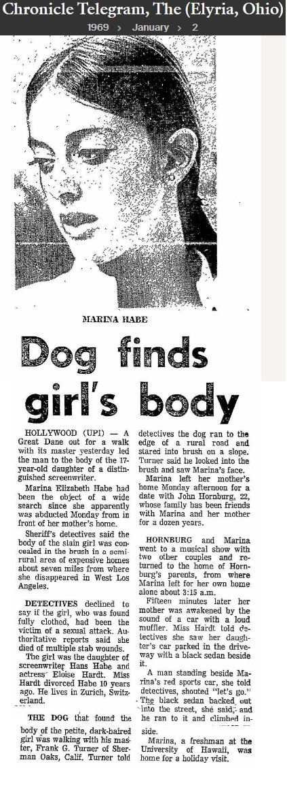

|
Car-
Related
Abductions in California 1966 - 1970 |
| |
|
CHERI JO BATES |
|
10/30/66 |
|
In
Riverside, California this 18 year-old student had car trouble. A
man came up and offered help. After failing to start her car he
offered her a ride. The stranger then murdered her. It was found
that the middle wire of the distributor had been pulled out. Zodiac
claimed her as a victim. |
| |
|
TWO
FEMALES
|
|
1968 |
|
In
Berkeley, California a man approached two young females to help
them when their VW wouldn't start. He was pushing their car when
another man came up to offer help. This angered the first man and he
left the scene. It was found that the middle wire of the distributor
had been pulled out.
|
|
|
|
MARINA
HABE |
|
12/30/68 |
|
This
17 year-old had been to Los Angeles earlier that night and had just
pulled up in the driveway of her home when she was abducted. Her
body was found off of Mulholland Dr. near Bowmont Dr. This was very
near where Family member and Bruce Davis friend Tex Watson kept an
apartment. Watson would not answer any questions about Habe's death.
There probably is DNA evidence in this case. |
|
|
|
 |
|
Elyria, Ohio
The Chronicle-Telegram, January 2, 1969 |
| |
|
ROSE
TASHMAN |
|
5/18/69 |
|
This
18 year-old was returning south-bound on the Hollywood Freeway from
a friends house in Van Nuys, California. She pulled over to the side
of the road near the Highland exit because of a flat tire. She was
abducted after someone had "neatly placed" flares all
around her Mustang. Her body was found a short time later off of
Mulholland Dr. There is DNA evidence in this case. |
| |
|
DOREEN GAUL |
|
11/21/69 |
|
Nineteen
year-old Doreen and her 15 year-old friend James Sharp were
hitchhiking in the Rampart area of Los Angeles. They were picked up
by two men. A short time later they were found dead having been
stabbed numerous times. It appears that Gaul was the prime target in
this abduction and Sharp just happened to be there when it happened. |
|
|
|
CINDY
LEE MELLIN |
|
1/20/70 |
|
This
19 year-old's car had a flat tire in the parking lot when she was
going to leave her work at the Broadway store in the Buenaventura Shopping
Center in Ventura, California. She was seen standing beside her car
while a man was changing her flat tire. She then vanished and has
never been found. It is one of the most frustrating cases for the
Ventura Police Department. |
| |
|
|
|
|
|
|
|
Los
Angeles Times, January 1970 |
|
|
|
 |
|
|
|
Click here for
Newspaper articles concerning Cindy
Mellin. |
|
|
|
KATHLEEN
JOHNS |
|
3/22/70 |
|
This
23 year-old was driving on Highway 132 near Modesto, California when
a man drove up and told her that her wheel was wobbling. She pulled
over and he appeared to repair the wheel. When she drove forward the
wheel came off. He then offered her a ride which turned into an
abduction and threats of murder. She eventually jumped out of his
car and escaped. Zodiac claimed her as one of his victims. |
|
|
|
ROBIN
GRAHAM |
|
11/15/70 |
|
This
18 year-old had car trouble on the Hollywood Freeway near the Santa
Monica exit after leaving work in Hollywood. A man (appearing to be
about 25 or 26 years old with dark hair) was seen having stopped to
give assistance. Eventually they drove off together in his '59 blue
or gray-green primered Corvette. She has never been seen again. |
| |
|
BRENDA
HARRISON |
|
Summer
(?) 1970 |
|
The
following account was put together after an in-person interview and
several email contacts: |
| |
|
In
1970, Brenda Harrison was blue-eyed, blonde-haired and much
younger-looking than her not quite 40 years of age. She lived in
Manhattan Beach, California. She worked at the Mattel Toy
Company in El Segundo and had to drive to Los Angeles because of
work related matters. She also checked at consulates about visas and
may have stopped for lunch and other errands in the area leaving her
car unattended for various periods of time. She does not remember
the date but knows the weather was hot. |
| |
|
When
Harrison started heading back to the South Bay she got on the Harbor
Freeway (California Highway 11, now Interstate 110) at the 5th or
8th Street on-ramp and proceeded south-bound for two to four miles.
She wasn't far from downtown L.A. when she had to pull over to the
shoulder because of engine problems. She remembers that the freeway
ahead curved slightly and there was an overpass just ahead. She
waited in her car hoping for a law-enforcement officer to help her
and call the Auto Club. |
| |
|
Just
then a man in a gray, '59 or '60, hardtop Corvette pulled over about
four car lengths ahead and in the shade of the overpass so she could
not see the license plate. Just a few moments after the Corvette
pulled over a dark, ordinary, American-made sedan with possibly two
men in it (and maybe a third in the back seat) slowed down and
approached Harrison's car. The men were looking directly at her. Then they
speeded up and left. |
| |
|
The
man in the Corvette had gotten out and was walking over to her car at a normal pace. She felt
uneasy. She describes him as a white man and thirty-ish. She noticed
that he was wearing a nice conservative, green, dressy western, muted,
tweed suit with cowboy boots. When he got to her window (which was
rolled-down about two inches) she noted he was wearing a light green shirt
that had dark green or dark colored checks on it. The stripes
outlining the checks were very narrow - kind of a "window
pane" look, and the panes were about 3/4" or smaller
squares. He was wearing a "traditional" cowboy string tie
with a circular clasp that was turquoise and/or silver in color. She
noted the heels of his boots were very worn and the boots were
unkempt - contradicting the appearance of the nice neat suit and tie. |
| |
|
He
looked to be of normal build but she had to look up at him. He
seemed to be about six feet tall but this may have been because of
the boots he was wearing. He had a clean-cut wholesome look. His
hair was short and either brown or light brown because of the
sunlight. It was wavy or curly - not tight curls. His gray-green
eyes had a deep penetrating and unsettling gaze. There was something
memorable about his eyes. He had crinkly lines at the corners of
them. She says the actor James Caan had similar hair and eyes in
those days. His voice inflection was calm and authoritative. |
| |
|
The
stranger opened his unbuttoned jacket and took out a badge attached
to a rectangular, black, possibly leather, protector (such as
engineers place in their pockets) saying he was an off-duty or
undercover officer and that he could help her. He said he could take
her to a phone or a service station. She declined. He indicated that
it may be a long time before other help may arrive and he would do
whatever was needed to take her to get help. She said
"No," after each attempt to convince her to leave with
him. Harrison was unusually uneasy and wary and those feelings
persisted even though the man did not seem intimidating or that
unusual. |
| |
|
She
then thanked him and rolled up her window. The man purposefully and
quickly (he was on a freeway) walked back to his car and drove off.
She then rolled her window back down as it was a very warm day.
Eventually a patrol-car stopped and called a tow-truck and her car was taken to
a repair shop. She doesn't remember the details of the repairs. |
| |
|
Some
years later Ms. Harrison read an article in an L.A. newspaper about
the Robin Graham incident. She wrote to the Graham family and told
them about her experience. There was no return address on the
envelope but she was eventually located and she gave a personal
interview which was taped. She identified Bruce Davis' photos as
looking very much like the man who offered assistance to her in
1970. (Davis - second in command of the Manson Family - was 28 at
that time.) She has also reaffirmed this identification and given
her account by email. |
| |
|
See
the Victims
page for more information on many of the above incidents. |
| |
|
SIMILARITIES |
| |
|
All of
these victims (except for Gaul and Habe) had car trouble with a man pulling up to offer help.
Mellin and Tashman had a flat tire. |
| |
|
All of
these victims were pretty and (with the exception of Harrison who
looked young for her age) in their late teens/early twenties. |
| |
|
Bates,
Mellin, Johns and Harrison were blondes or had blondish hair
and blue eyes. Tashman, Gaul, Graham and Habe had long dark hair and a similar
appearance. |
| |
|
Tashman,
Mellin and Graham had ties to the Valley. |
| |
|
Habe
and Tashman were found off of Mulholland Dr. |
| |
|
Mellin
and Graham have never been located. |
| |
|
CONNECTIONS? |
| |
|
Bruce
Davis lived, at times, at Spahn Ranch in the San Fernando Valley. At the Ranch
there were rodeo performers that had and wore dress cowboy suits and
boots. The Family would sometimes use their clothes and cars. After
cowboy actor Shorty Shea was killed by Bruce Davis and the Family,
Davis was seen wearing Shea's cowboy boots. One teenaged girl was seen
wearing his cowboy shirt. Shea was poor and worked at the ranch so
his boots were probably very worn. Davis had a friend with a
Corvette and Davis was, on occasion, seen driving it. It is unknown
if it was the same year and model that Harrison saw or was seen by
the CHP at the Graham scene. The man seen helping Robin Graham was
about 25 to 26 with dark brown hair. Davis was 28 with dark brown
hair. Harrison did not pay that much attention to the hair of the
man who approached her but hair can be easily lightened or darkened.
At least one former member of the Manson Family thought that freeway
or stalled-car abductions was something that Davis was
"into." Everyone in the Family feared Davis the most and
he has been called a "cold-blooded murderer." |
| |
|
William
Mulholland became chief engineer of the Los Angeles Water Company in
the 1920s. He was responsible for many water projects in the Los
Angeles area. The Mulholland name became synonymous with water. A
road that wound through the Santa Monica Mountains was named
Mulholland Drive in his honor. Unfortunately, he had a dam built
that later collapsed. Some 500 people perished. It is interesting to
note that some of these abductions (and maybe more) have a link to
Mulholland Drive. Is this further evidence of the Zodiac's and/or
the Family's connection to water? |
| |
|
ACCOMPLICES |
| |
|
Brenda
Harrison and the late Kathleen Johns may be the only ones who spoke
to the possible suspect of all of the above incidents and survived
to tell about it. He could have had an accomplice or even more
than one. Harrison mentioned a sedan with a couple of men in it
that slowed down to stare at her as her "rescuer"
was walking over to her car. |
| |
|
Another
car - besides the Corvette - had been seen the night Robin Graham
was taken. |
| |
|
There
were at least two men involved in the Marina Habe abduction. The
black car that was seen by her mother was the same make, model and
color of
a car that was at Spahn Ranch - Manson's hangout in the San Fernando
Valley. That car was owned by the late cowboy performer Randy Starr. |
| |
|
On the
night of, and in the same general area of, the Kathleen Johns
incident a car passed up two male drivers. A short time later they
saw the same car with a man standing beside it waving for them to
stop. They felt it was very suspicious and did not stop. They
reported this to the police after they had read about the Johns
kidnapping. |
| |
|
It is
believed that the killer of Cheri Jo Bates in Riverside, at that
early date (10/30/66), was acting alone. |
| |
|
INTERESTING
FACTS |
| |
|
Bruce
Davis
was living in Riverside when Bates was killed there on 10/30/66. |
| |
|
Bruce
Davis
was in L.A. at the time of Habe's abduction. |
| |
|
Bruce
Davis
returned to L.A. in April 1969. Tashman was abducted and slain
5/18/69. |
| |
|
Bruce
Davis
was visiting and hanging-out in Ventura in early 1970. |
| |
|
Bruce
Davis
was arrested on 1/21/70 - one day after Mellin was abducted. This is a
pattern in other unsolved murders that Davis is a suspect of and are
not mentioned in this report. |
| |
|
Bruce
Davis
was released from custody in mid-March 1970. Johns was abducted on 3/22/70. |
| |
|
Bruce
Davis
visited a house in 1970 that was rented by Family members. That
house was five doors
away from Graham's home. |
| |
|
Bruce
Davis
surrendered to police in L.A. on 12/2/70 - seventeen days after the
Graham abduction on 11/15/70. He fully expected to be released as
before. |
| |
|
Bruce Davis was
not
in jail or out of the country at the time of any of the above
mentioned incidents.
|
|
_______________________________________ |
| |
|
The
Zodiac killer, in his letter to the L.A. Times on 3/13/71,
claimed there were "a hell of a lot more down there (victims in
Southern California)" and that the police were "only
finding the easy ones." Are the above victims some of to whom
he was referring? |
| |
|
More
Bruce Davis Information |
| |
| |
|
Back
Top
of page |
| |
| |